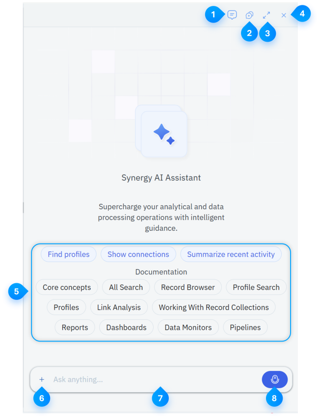

AI Assistant
The AI Assistant component enables you to ask questions in natural language and analyze data available within a case. It uses the current case context to search profiles, query data, generate charts, display media and conversations, and provide actions that open the relevant Synergy components.
The AI Assistant also considers the content that you are currently viewing. For example, when you open a profile, dashboard, or Link Analysis graph, the assistant provides starter prompts and responses related to that content.
You can use the AI Assistant to:
- Search for profiles and records.
- Query case data.
- Generate charts and data grids.
- Review media and conversations.
- Open profiles, schemas, collections, dashboards, and other supported components.
- Navigate to related documentation topics.
- Continue an investigation by using suggested follow-up questions.
Note: The AI Assistant is available only within a case. It uses the data, permissions, and context associated with the current case.
In this Topic
Accessing AI Assistant
After opening a workspace, you can access the AI Assistant in the following ways:
- In the top toolbar or the workspace, click AI Mode. The AI Assistant opens as a docked panel on the right.
- On the Workspace Home page, in the search bar, click AI Mode.
Exploring AI Assistant
The following image illustrates the AI Assistant UI elements:

This image is for illustrative purposes only and does not represent real data.
The following table explains the Synergy Home page:
| # | Component | Description |
|---|---|---|

|
Conversation History | Enables you to view and open previous conversations saved within the current case. |

|
New Chat | Enables you to start a new conversation. |

|
Center/Dock | Enables you to switch between the centered full-width layout and the docked side-panel layout. |

|
Close Chat | Closes the AI Assistant panel without deleting the current conversation. |

|
Starter prompts and documentation topics | Enables you to select a suggested question or request information about a documented Synergy component. |
| Upload attachment | Enables you to attach an image or PDF to your next message. | |
| Message field |
Enables you to enter a question or instruction for the AI Assistant. Tip: Press Enter to send or Shift+Enter to insert a new line. |
|
| Recording | Enables you to dictate a question when the message field is empty. Press the Microphone icon to start recording. After you enter text, the control changes to Send. |
Viewing AI Assistant Responses
The AI Assistant displays the following text and interactive responses within the conversation:
| Response | Description |
|---|---|
| Profiles |
Profile results appear as profile cards. Select a profile card to open the complete profile in a content tab. Note: When you open a profile from the centered AI layout, the assistant changes to the docked layout so you can view the profile and conversation together. |
| Profile Sets | A profile set appears as a saved profile-set card. Select the card to open the profile set. |
| Schema | A schema card displays a summary of the referenced Data Catalog schema, including its name and available key details. |
| Data Grids |
Query results appear in a sortable and paginated grid. Depending on the schema configuration, the grid displays:
Right-click a record to access the available actions, which includes:
The available actions depend on the result and schema configuration. Note: Data generated by the AI Assistant displays a label such as Generated, Verified, or Certified, depending on the source. |
| Charts |
The assistant generates charts from schema query results. Charts appear inline in the conversation and includes bar charts, line charts, or other supported visualizations. |
| Media |
Media results include audio or video with a waveform and transcript. The media player loads when the assistant returns a supported media result. |
|
Named-Entity Actions |
When a response references an entity that you can open, the assistant displays an entity chip or action button. Select the action to open the corresponding component. |